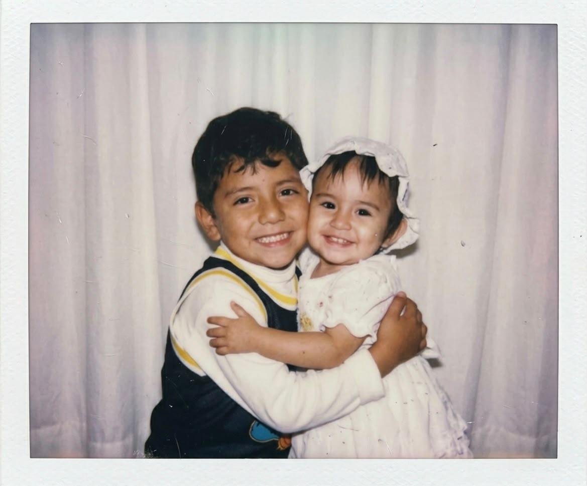

Te quiero como Pato, pato-da la vida
Querida Hachi
Sabes, estoy seguro de que va a pasar mucho tiempo de cuando escriba esto hasta cuando puedas leerlo, ya que no me atrevo a dartelo o no encuentro como.
Primero que nada espero que te encuentres muy bien de salud. Ultimamente te he extrañado mucho, me ha costado estar sin ti, es muy dificil querer hablar con alguien, contarle lo que me sucede y no estes tu ahi para hacerlo, alguien que entiende mi forma de ser.
Se me hace algo triste ver como para ti parece todo normal, aunque tal vez no lo sea. Quisiera creer que en ti todavia queda algo de amor hacia mi, aunque tu dices que tal vez nunca fue amor.
Como segundo, no se que vaya a suceder con nosotros o si es que aun queda algo de nosotros y tal vez solo yo lo veo asi, pero quiero que sepas que todos los dias le pido a Dios para que te cuide, te proteja de malas personas y te de mucha salud.
A veces me pongo nostalgico y recuerdo todos los momentos lindos que vivimos y cuando paso por un lugar donde estuvimos me acuerdo y sonrio.
Tal vez no es una despedida, solo necesito expresar lo que siento. La verdad es que cuando logre dejar de pensar en ti, ni siquiera dire nada.
Ya se que tal vez no signifique mucho porque la IA lo hizo casi todo, pero igual ya esta hecho.
Como dije antes "Desde la primera vez que te vi, ya no quise estar con nadie más".
Y pues nada, me gustaria decirte una ultima vez:
Te amo, Monita.